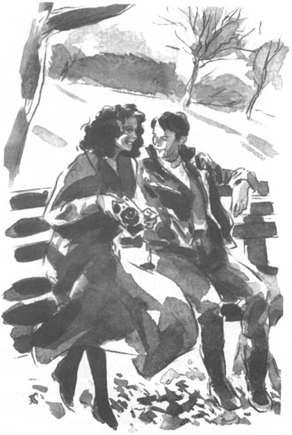
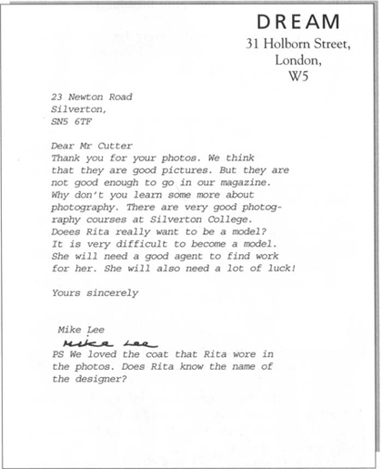
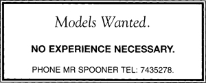

Listen to Part 1:
Cuối tuần tiếp theo, Tom và Rita đi chơi với nhau. Tom mang theo máy ảnh và họ đến công viên ở Silverton. Trời rất lạnh. Nhưng nắng thì chói chang. Họ đi dạo quanh hồ và vườn hoa. Họ ăn trưa trong một nhà hàng tại công viên. Sau đó, họ ngồi gần một cây sồi lớn.
‘Anh rất vui’, Tom nói.
‘Em cũng vậy’, Rita nói. Cô đặt tay mình lên tay Tom. ‘Em mừng vì đã gặp anh’.
Họ nói chuyện không ngừng. Sau đó, Tom chụp một số ảnh Rita đang mặc chiếc áo khoác mùa đông mới của cô.
‘Em tự may chiếc áo này’, cô nói. ‘Em muốn mua một thứ gì đó mới nhưng em không đủ tiền để mua những bộ đồ mà em thích’.
‘Chiếc áo trông tuyệt’, Tom nói. ‘Và em cũng vậy’.
‘Anh có thể chụp một tấm hình của anh được không?’, Rita hỏi.
‘Tại sao cơ?’, Tom hỏi. Anh cười. ‘Anh sẽ không làm người mẫu đâu’.
‘Không’, Rita nói. ‘Nhưng em nghĩ anh rất đẹp trai’.
Tom đỏ mặt vì ngượng. ‘Không, anh không đẹp đâu’, anh nói.
Listen to Part 2:
Nhưng nhiều cô gái nghĩ Tom đẹp trai. Anh ấy cao, tóc đen và mắt xanh. Và anh ấy có một nụ cười rất đẹp.
Tối hôm đó, Tom rửa cuộn phim đã chụp Rita. Anh ấy tạo mười bản sao những bức ảnh đẹp nhất của Rita. Sau đó, anh ấy gửi chúng đến mười tạp chí thời trang khác nhau.
Vào thứ Hai, anh ấy gặp Rita tại thư viện. ‘Anh đã gửi những bức ảnh cho các tạp chí’, anh ấy nói. ‘Hôm nay là ngày 10 tháng 11. Anh hy vọng họ sẽ in những bức ảnh đó trong các tạp chí trước Giáng sinh’.

Nhiều cô gái nghĩ Tom đẹp trai. Anh ấy cao, tóc đen và mắt xanh.
Rita và Tom gặp nhau mỗi ngày. Cô đến thư viện vào buổi sáng và đọc các tạp chí. Vào giờ ăn trưa, Tom đưa cô một ít bánh mì kẹp và nước ép trái cây. Cô kể cho anh ấy nghe tất cả những vấn đề mà cô ấy gặp phải với bố mình.
‘Ông ấy muốn em lấy anh chàng xấu xí nhất thế giới’.
‘Tại sao vậy?’, Tom hỏi.
‘Vì người đàn ông đó có tiền’, Rita nói. ‘Và bố em muốn em kết hôn với một người đàn ông có tiền. Bố không muốn em nghèo cả đời. Nhưng em sẽ chỉ kết hôn với ai mà em yêu. Và em ghét Bungo’.
‘Bungo! Quả là một cái tên ngốc nghếch!’
Listen to Part 3:
‘Anh ta là một kẻ ngốc nghếch. Anh ta là chủ một tiệm bánh và anh ta rất, rất béo. Em nghĩ anh ta ăn tất cả những chiếc bánh mà anh ta làm. Anh ta phải ngồi trên ba chiếc ghế khi đi xe buýt’.
Tom cười. ‘Đừng lo’, anh ấy nói. ‘Sớm thôi em sẽ trở thành một người mẫu nổi tiếng với một ngôi nhà và một chiếc xe hơi của riêng mình. Em sẽ không phải lấy Bungo đâu’.
Một tuần sau, một bộ ảnh đã được gửi lại. Một tạp chí có tên Thời trang đã không muốn chúng.
‘Đừng lo’, Tom nói. ‘Anh đã gửi bộ ảnh đến chín tạp chí khác’.
Ngày hôm sau, họ nhận thêm ba bộ nữa. Và ngày sau đó, năm phong bì thư nữa đến nhà Tom.
Rita rất buồn. ‘Không ai muốn em cả’, cô ấy nói. ‘Em sẽ không bao giờ trở thành người mẫu đâu’.
‘Không, không đúng đâu’, Tom nói. ‘Có một tạp chí vẫn chưa trả lời. Tạp chí đó tên là Ước mơ. Có lẽ Ước mơ sẽ dùng những bức ảnh của chúng ta’.
Một lá thư từ Ước mơ đã đến vào ngày hôm sau. Lá thư viết:

Tom cho Rita xem lá thư. ‘Ông ấy thích chiếc áo của em. Anh đã nói với em rằng quần áo của em rất đẹp mà’.
Listen to Part 4:
Rita bắt đầu khóc.
‘Em chẳng quan tâm đến quần áo. Ai cũng có thể làm ra quần áo. Em muốn trở thành người mẫu và không ai muốn em cả’.
Tom không biết phải nói gì. Anh ấy muốn Rita quên việc trở thành người mẫu đi. Nhưng anh ấy rất buồn vì cô ấy quá buồn.
‘Đừng khóc, Rita’, anh ấy nói. ‘Chúng ta sẽ tìm cho em một người quản lý’.
‘Nhưng em có thể tìm một người quản lý ở đâu?’,
‘Anh nghĩ là họ có đăng quảng cáo trên tạp chí’, Tom nói.
Rita và Tom đọc các quảng cáo trong tất cả các tạp chí thời trang tại thư viện. Họ tìm được số điện thoại của một số người quản lý. Sau đó, họ đã gọi điện cho họ. Nhưng tất cả những người quản lý đều muốn các người mẫu từng làm việc cho các tạp chí thời trang trước đó.
Sau đó, Rita tìm thấy một quảng cáo trên tờ Tin tức Silverton. Quảng cáo này nói rằng:

‘Nhìn này!’ Rita nói. ‘Chúng ta phải gọi ngay đến số điện thoại này!’
Listen to Part 5:
Tom thấy lo lắng. Anh ấy không thích quảng cáo này. Nhưng anh ấy không muốn làm Rita buồn, vì vậy anh ấy không nói gì cả.